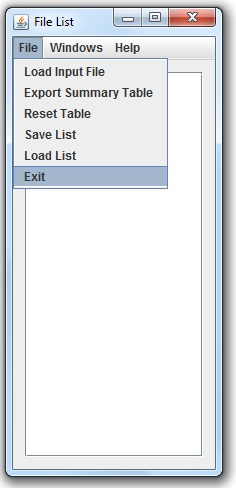

Step 1
To remember the windows size(s) and their respective position(s) on the
screen, resize and reposition the respective windows, then select "Exit"
from the file menu or simply click on the "X" button.
Note: This will quit the application! Ensure that you have
completed the task at hand before doing so.

Return to menu